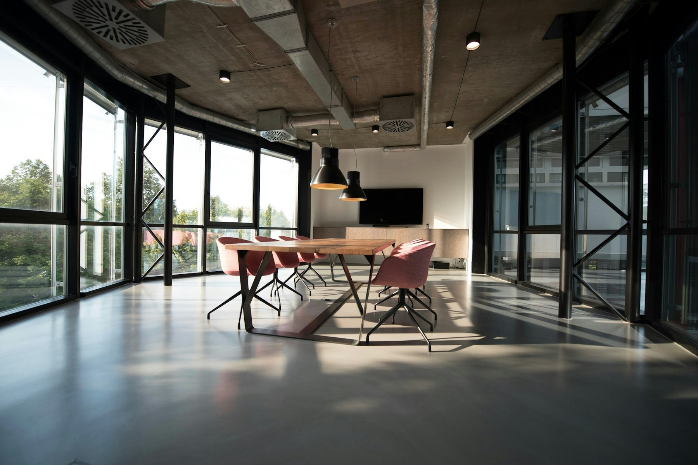

Sana
HR agent
Listening
Empower HR to make better people decisions, accelerate hiring, and free up teams from routine work.
Sana starts when this section is on screen. Choose a team to send a prompt, then ask anything you want.